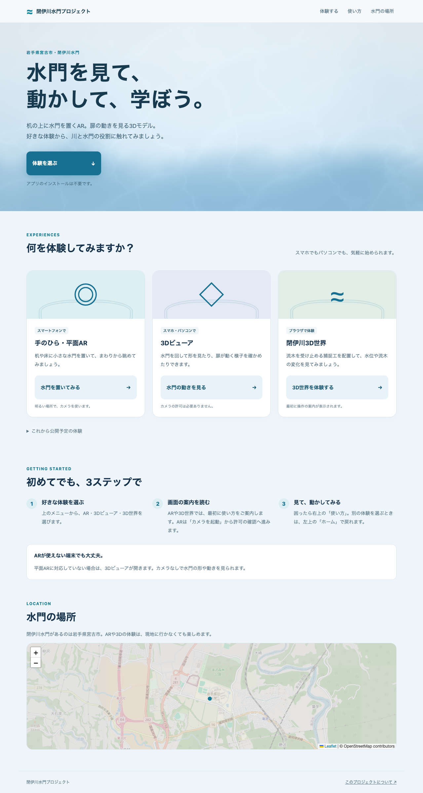
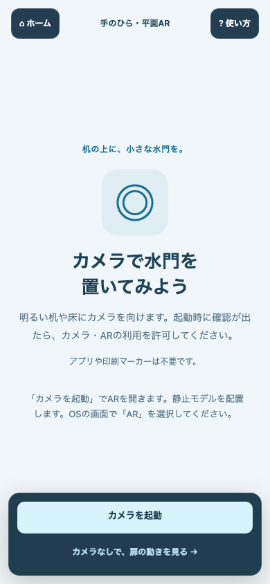
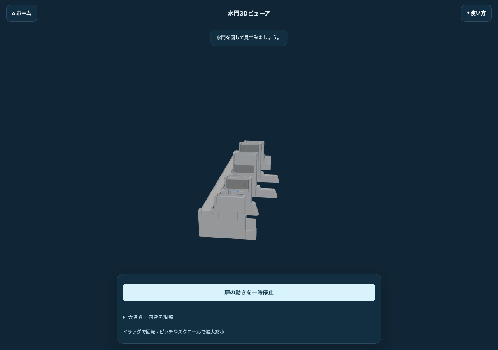
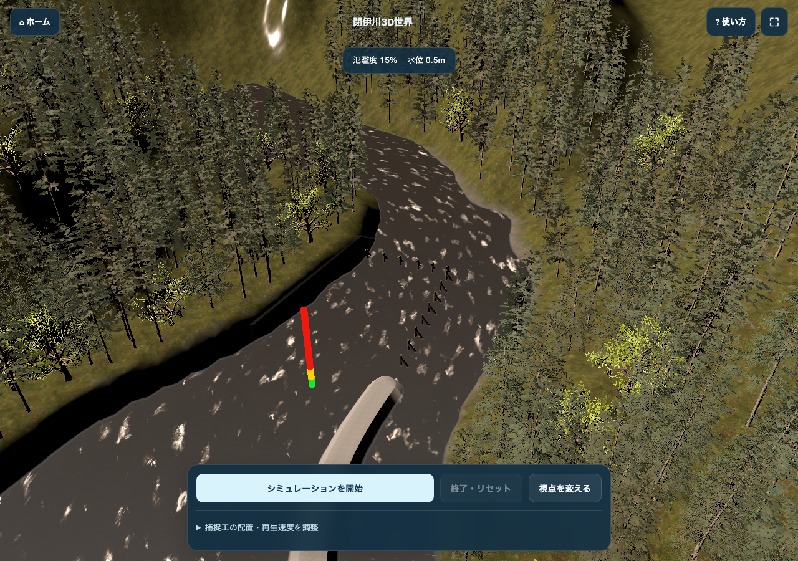

1 / 6 · はじめに
画面を見ながら、水門ARのしくみを学ぶ
このアプリには、現実の机に水門を置く体験、水門だけを回して見る画面、川のシミュレーションがあります。まず使い方を理解し、そのあと裏側のしくみを読んでください。
画面でできること
ARは、カメラで見ている現実に3Dの物体を重ねる技術です。3Dビューアは、画面の中だけで立体を見るものです。WebGLは、ブラウザで立体を描くためのしくみです。
使う順番
トップページで体験を選びます。スマホで机に置きたいときは平面AR、扉の動きを確認したいときは3Dビューア、川の変化を試したいときは3D世界を選びます。
裏で何が起きるか
Astroがページを用意し、JavaScriptが操作に反応します。水門はThree.js、川のシミュレーションはUnityで描きます。同じ「3D」でも担当するプログラムが違います。
2 / 6 · トップページ
体験の入口を選ぶ
使える体験を固定カードで並べました。左上のホームから、いつでもこのページへ戻れます。

アプリをブラウザで動かして撮影した画面です。
画面でできること
平面AR・3Dビューア・閉伊川3D世界の3つを選べます。下には使い方と水門の場所を確認する地図があります。準備中の機能は別の欄にまとめています。
使う順番
カードの説明を読み、青いボタンを押します。使い方が分からないときは、上の「使い方」から最初の手順を確認します。
裏で何が起きるか
Astroが文章とリンクをHTMLにします。背景の水はWebGLで描き、地図はLeafletという地図用ライブラリで表示します。体験を選ぶと、別のページへ移動します。
3 / 6 · 平面AR
机や床に、小さな水門を置く
スマホで使う体験です。最初に3つの手順を読み、自分でカメラ起動ボタンを押します。

スマホサイズのブラウザで撮影した起動画面です。実機のカメラ映像ではありません。
画面でできること
対応スマホで、現実の平面に水門を表示できます。右上の「使い方」で手順を読み直せます。PCや非対応端末では3Dビューアが開きます。
使う順番
明るく模様のある机や床を選びます。カメラを起動して許可し、端末をゆっくり動かします。WebXRでは床に円が出たら「ここに配置」。iPhoneではシステム画面のARタブで平面に置きます。
裏で何が起きるか
WebXR対応端末では、ブラウザがカメラと端末の位置を扱います。Hit Testは「画面の中心から見た先で、平面に当たる場所」を調べる処理です。そこにThree.jsの水門を置きます。iPhoneでは水門をUSDZという形式に変換し、AppleのQuick Lookへ渡します。
iPhoneのQuick Lookは静止モデルの表示です。扉のアニメーションを見るには3Dビューアを使います。Quick Look内のボタンはOSが用意するため、閉じるボタンでブラウザへ戻ってから左上のホームを押してください。
技術用語をもう少し読む
平面は机や床のような平らな面。Hit Testは平面の位置を探す処理。Anchorは検出した位置とのつながりを保つしくみです（利用できる端末で使用）。USDZはAppleのAR表示へ渡すファイル形式です。
4 / 6 · 3Dビューア
水門の形と扉の動きを見る
カメラを使わず、画面の中で水門を観察できます。

アプリをブラウザで動かして撮影した画面です。
画面でできること
水門を回転・拡大して観察し、扉の動きを再生・一時停止できます。「大きさ・向きを調整」を開くと、幅と向きを変更できます。
使う順番
水門をドラッグして回します。スマホでは2本指、PCではホイールで拡大します。画面下のボタンで扉の動きを止め、構造を確認します。
裏で何が起きるか
Three.jsがGLB形式の水門モデルを読み込みます。GLBは形・色・動きをまとめた3Dデータです。OrbitControlsがドラッグを視点の変更に変え、AnimationMixerがモデルの扉の動きを再生します。平面ARと同じモデルを使います。
5 / 6 · 3D世界・WebGL
川の流れと捕捉工を試す
初回は3つの手順を確認してから、シミュレーションを読み込みます。

アプリをブラウザで動かして撮影した画面です。
画面でできること
捕捉工（流木を受け止める設備）を配置し、シミュレーションを開始できます。視点を切り替え、再生速度を変え、終了・リセットして別の配置を試せます。
使う順番
「捕捉工の配置・再生速度を調整」を開き、「初期位置に置く」またはドラッグで配置します。「シミュレーションを開始」で流れを観察し、「終了・リセット」でやり直します。
裏で何が起きるか
Unityで作った3D世界をWeb向けに書き出しています。JavaScriptのローダーがプログラムとデータを読み込み、WebAssemblyが計算し、WebGLが描画します。ページのボタンはSendMessageを使い、Unity内のGameControllerへ「開始」「リセット」などの指示を送ります。
6 / 6 · 作る人の地図
どこを読めば、どの処理が分かるか
実際にコードを読むときの入口です。全部を一度に理解する必要はありません。
画面でできること
画面のHTML、操作のJavaScript、3Dモデルを分けて読むと理解しやすくなります。
使う順番
まずページの見た目を読み、次にボタンのイベントを追い、最後に描画やデータ読み込みを確認します。
裏で何が起きるか
トップ: src/pages/index.astro。水門UI: src/ar-engines/place/PlaceExperience.astro。水門の処理: src/ar-engines/place/experience.ts。Unityの入口: public/unity/index.html。共通ガイド: public/shared/onboarding.js。共通UI: public/shared/experience.css。
データが画面に届くまで
水門の場合は、設定JSONでモデルの場所を選び、GLBを読み込み、Three.jsが画面へ描きます。ドラッグやボタンはJavaScriptが受け取り、視点やアニメーションを更新します。
川の場合は、HTMLのローダーがUnityのデータとWebAssemblyを読み込みます。ページからUnityへはSendMessage、Unityからページへはunity-stateという通知で状態を伝えます。画面上の水位や、操作ボタンの有効・無効がこの通知で変わります。
他の技術と、開発時のページ
TypeScriptはJavaScriptに型のチェックを加える言語です。Astroはページを作る枠組み、Svelteはリポジトリ内の一部の操作UIを作る枠組みです。Leafletは地図を表示します。
/lab/ はAR方式を比較する開発用ページです。位置情報・端末の向きを使う方式やマーカー方式を試すもので、机や床を探す平面ARとは別です。本番ビルドでは既定で公開しません。
カメラやARにはHTTPSでの配信が必要です。アプリの案内とは別に、許可の確認はOSやブラウザが出します。iPhoneのQuick LookのUIもOSが担当します。